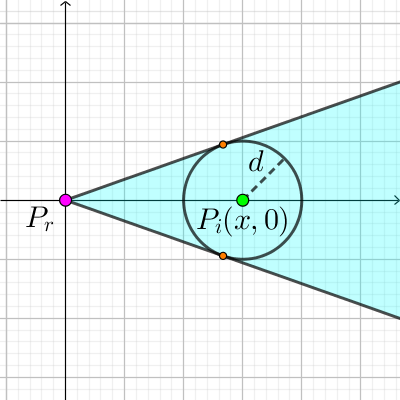
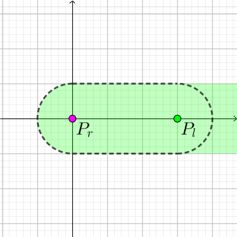

平面上有 $n$ 个 (互不相同的) 点 $P_1, P_2, \cdots, P_n$，你需要寻找它的一个子序列 $P_{i_1}, P_{i_2}, \cdots, P_{i_m}$，其中 $1 = i_1 < i_2 < \cdots < i_m = n$，满足对于 $\forall 1 \leq k < m$ 以及 $i_k < j < i_{k+1}$，均有 $P_j$ 到线段 $P_{i_k} P_{i_{k+1}}$ 的距离不超过 $d$。求序列长度 $m$ 的最小值。
第一行包含两个正整数 $n, d$ ($2 \leq n \leq 2000; 1 \leq d \leq 10^6$)，分别表示点的个数和点到线段的距离限制。
接下来 $n$ 行，每行两个整数 $x_i, y_i$ ($-10^6 \leq x_i, y_i \leq 10^6$)，表示第 $i$ 个点的坐标。保证所有点的坐标两两不相同。
输出一行一个整数，表示序列长度 $m$ 的最小值。数据保证将 $d$ 改变一个不超过 $10^{-4}$ 的数后不影响答案。
和这题类似，用 $f_i$ 表示子问题 $\left[ 1, i \right]$ 的答案 (最小长度)，然后设 $Q \left( j, i \right)$ 表示是否满足对于 $\forall j < k < i$，均有 $P_k$ 到线段 $P_j P_i$ 的距离 $\leq d$，于是不难得 $O \left( n^2 \right)$ 转移 ($f_1 = 1$) $$ f_i = \min_{\substack{1 \leq j < i \\ Q \left( j, i \right) = \mathrm{true}}} \left( f_j + 1 \right) $$
那同样，暴力判断 $Q \left( l, r \right)$ 的时间复杂度是 $O \left( r - l \right)$，从而总时间复杂度就达到 $O \left( n^3 \right)$，无法通过。
而且转移点也不一定有单调性，因此只能考虑优化 $Q \left( l, r \right)$ 的计算速度了。
考虑固定右端点 $r$，尝试在 $O \left( n \right)$ 时间内计算出所有 $Q \left( l, r \right)$。
而 $Q \left( l, r \right) = \mathrm{true}$ 当且仅当对于每个 $l < i < r$，$P_i$ 到线段 $P_l P_r$ 的距离 $\leq d$。
考虑对于一个固定的 $P_i$，它会对 $P_l$ 产生哪些限制。
若 $\left| P_i P_r \right| \leq d$，则无论 $P_l$ 如何选择，均有 $\operatorname {dist} \left( P_i, \overline {P_l P_r} \right) \leq d$，从而不会对 $P_l$ 产生额外限制。
若 $\left| P_i P_r \right| > d$，由对称性不妨设 $P_r = \left( 0, 0 \right), P_i = \left( x, 0 \right)$ ($x > d$)，则：
首先 $P_l$ 不能在 $y$ 轴或 $x$ 负半平面上。否则有 $\operatorname {dist} \left( P_i, \overline {P_l P_r} \right) = \left| P_i P_r \right| = x > d$。
其次，$P_i$ 距离直线 $P_l P_r$ 的距离也不能大于 $d$，因此直线 $P_l P_r$ 必须与以 $P_i$ 为圆心，$d$ 为半径的圆相交 (或相切)。由于 $\left| P_i P_r \right| > d$，原点 $P_r$ 是在圆外部的。
于是，过原点 $P_r$ 作 $\odot \left( P_i, d \right)$ 的两条切线，则 $P_l$ 需要在这两条射线所形成的角中，如下图所示：
因此，每个 $P_i$ 都会对 $P_l$ 产生一个极角的限制 (如果假设 $P_r$ 为原点)，因此我们可以取若干个角的交。由于这些角都是劣角 ($< 180^\circ$ 的角)，因此它们的交集仍然是一个角 (或空集)。
最终需要检验 $P_l$ 是否在这个角中。如果 $P_l$ 不在这个角中，那么 $Q \left( l, r \right)$ 一定为 $\mathrm{false}$，否则 $Q \left( l, r \right)$ 可能为 $\mathrm{true}$。
为什么这么说呢？因为我们之前只是提取了若干必要条件。我们考虑等价转换，从 $P_l$ 的角度考虑，在满足上述情况下，$P_i$ 的可能位置。
可以发现，$P_i$ 的可行域为一个圆 $\odot \left( P_r, d \right)$ 与一个单侧无穷带状矩形的并 (即下图中绿色区域)：
而事实上我们要求所有的 $P_i$ 在虚线围起来的 "胶囊形" 区域中，从而可能会有多解。
不过，只需注意到图示的 "胶囊形" 区域可以看成两个绿色区域的交，一个以 $P_r$ 为圆心，一个以 $P_l$ 为圆心。
定义 $\Lambda \left( P_r, P_l \right)$ 表示如上图所示的绿色区域，\begin{align*} Q_r \left( l, r \right) &= \bigwedge_{l < i < r} \left[ P_i \in \Lambda \left( P_r, P_l \right) \right] \\ Q_l \left( l, r \right) &= \bigwedge_{l < i < r} \left[ P_i \in \Lambda \left( P_l, P_r \right) \right] \end{align*}
则由于 "胶囊形" 区域等于 $\Lambda \left( P_r, P_l \right) \cap \Lambda \left( P_l, P_r \right)$，于是 $$ Q \left( l, r \right) = Q_r \left( l, r \right) \wedge Q_l \left( l, r \right) $$
而我们刚才的过程就是求出了所有点对的 $Q_r \left( l, r \right)$，对称地我们也可以求出所有点对的 $Q_l \left( l, r \right)$，从而就能得到 $Q \left( l, r \right)$ 了，时间复杂度 $O \left( n^2 \right)$。
#include <bits/stdc++.h>
using std::cin;
using std::cout;
const int N = 2054, INF = 0x3f3f3f3f;
struct vec2 {
double x, y;
vec2 (double x0 = 0., double y0 = 0.) : x(x0), y(y0) {}
inline vec2 operator - (const vec2 &B) const {return vec2(x - B.x, y - B.y);}
inline double operator ^ (const vec2 &B) const {return x * B.y - y * B.x;}
inline double norm2() const {return x * x + y * y;}
inline vec2 trans(double a11, double a12, double a21, double a22) const {return vec2(x * a11 + y * a12, x * a21 + y * a22);}
} p[N];
int n, r;
int f[N];
int flag;
bool seg[N][N];
vec2 L, R;
inline void down(int &x, const int y) {x > y ? x = y : 0;}
inline bool check(const vec2 &v) {return !flag || ((L ^ v) >= 0 && (v ^ R) >= 0);}
inline void update(const vec2 &v) {
double delta = v.norm2() - (long long)r * r, coef; vec2 L0, R0;
if (delta <= 0) return;
coef = r / sqrtl(delta), L0 = v.trans(1, coef, -coef, 1), R0 = v.trans(1, -coef, coef, 1);
if (!flag) {L = L0, R = R0, flag = 1; return;}
if (check(L0)) {if (L = L0, (R0 ^ R) >= 0) R = R0;}
else if (check(R0)) R = R0;
else if ((L0 ^ R) >= 0 && (L ^ R0) >= 0) ;
else flag = -1;
}
int main() {
int i, j, x, y;
std::ios::sync_with_stdio(false), cin.tie(NULL);
cin >> n >> r;
for (i = 0; i < n; ++i) cin >> x >> y, p[i] = vec2(x, y);
for (i = n - 2; i >= 0; --i)
for (flag = 0, j = i + 1; j < n && ~flag; ++j) {
if (check(p[j] - p[i])) seg[i][j] = true;
update(p[j] - p[i]);
}
for (*f = i = 1; i < n; ++i)
for (flag = 0, f[i] = INF, j = i - 1; j >= 0 && ~flag; --j) {
if (seg[j][i] && check(p[j] - p[i])) down(f[i], f[j] + 1);
update(p[j] - p[i]);
}
cout << f[--n] << '\n';
return 0;
}
坑1：由于 $Q \left( l, r \right) = Q_r \left( l, r \right) \wedge Q_l \left( l, r \right)$，因此正反各需要扫描一遍，不要遗漏了。
坑2：可以利用向量代替角度进行存储，避免反三角函数 (即求出切点坐标)。同时注意两个 (环上) 区间求交的问题，不要混淆交为空和包含关系。